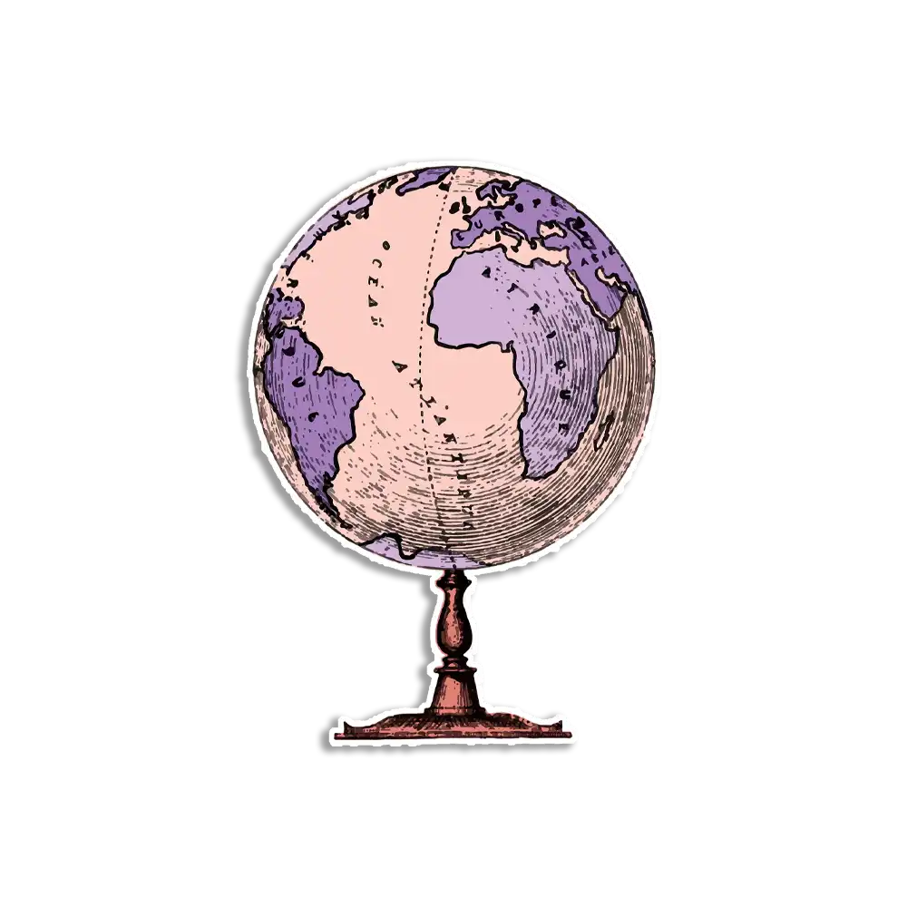

- Home
-
Sobre nós
- Endereço
- História
-
nossa Academy
- Cursos
- Campus
-
Admissões
- Matricular
- Lorem
-
Contato
- Telefones

O Mundo em Números: Fatos Curiosos sobre a Terra
A Terra gira a 1.670 km/h no equador, mas esse movimento é imperceptível devido ao seu tamanho. A maior cadeia de montanhas do planeta, a Dorsal Mesoatlântica, se estende por 65.000 km debaixo do oceano Atlântico. Embora haja cerca de 195 países reconhecidos, existem mais de 200. A Floresta Amazônica, a maior floresta tropical, o ponto mais baixo da Terra, o Mar Morto, fica 430 metros abaixo do nível do mar.